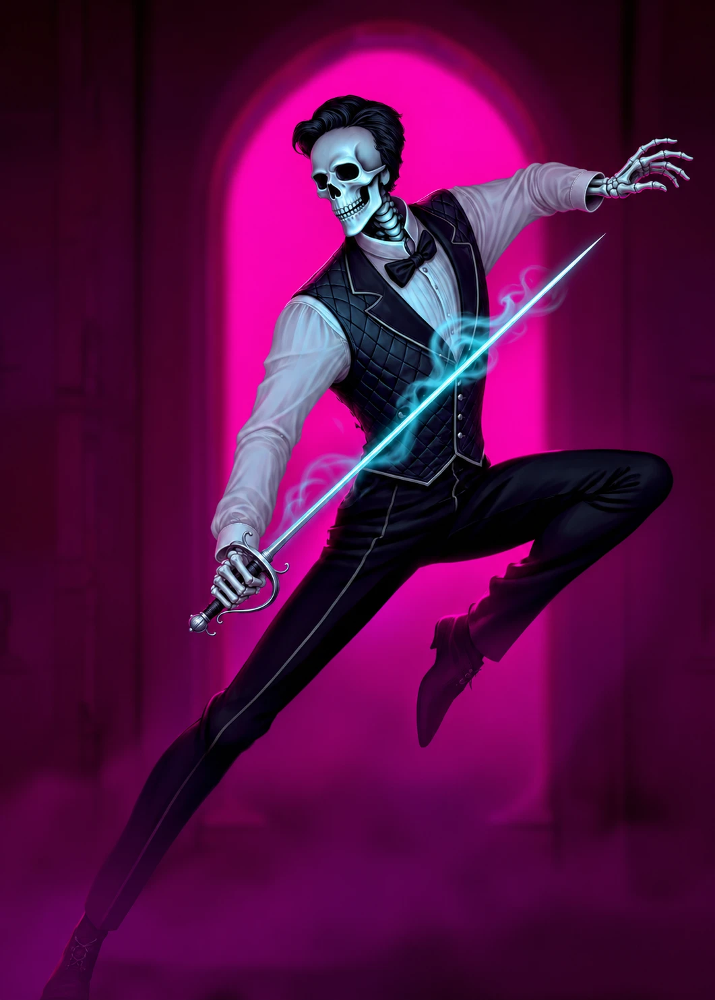

<meta charset="utf-8">
<title>I don’t like AI</title>
<meta name="claude:viewport-fit-sides" content="cover">
<link rel="preconnect" href="https://fonts.googleapis.com">
<link rel="preconnect" href="https://fonts.gstatic.com" crossorigin>
<link rel="stylesheet" href="https://fonts.googleapis.com/css2?family=Inter:wght@400;500;600;700&family=Playfair+Display:ital,wght@0,700;0,800;0,900;1,700;1,800;1,900&display=swap">
<style>
/* Layout : version Instagram (EN), 8 slides 1080×1350, même collage noir + rose néon que la
   version LinkedIn. Hook anti-IA en slide 1, paradoxe assumé en slide 2,
   l'image de la slide 7 continue sur la 8. */
:root {
  --ink: #0A0A0B;
  --ink-2: #151517;
  --line: #24242A;
  --paper: #F6F4F1;
  --grey: #9C9BA3;
  --pink: #FF2E93;
  --f-display: "Playfair Display", Georgia, "Times New Roman", serif;
  --f-body: "Inter", system-ui, -apple-system, "Helvetica Neue", sans-serif;
  --grain: url("data:image/svg+xml;utf8,<svg xmlns='http://www.w3.org/2000/svg' width='240' height='240'><filter id='n'><feTurbulence type='fractalNoise' baseFrequency='0.85' numOctaves='2' stitchTiles='stitch'/><feColorMatrix values='0 0 0 0 1  0 0 0 0 1  0 0 0 0 1  0 0 0 .55 0'/></filter><rect width='100%' height='100%' filter='url(%23n)'/></svg>");
  color-scheme: dark;
}
html, body { background: var(--ink); color: var(--paper); }
body { margin: 0; font-family: var(--f-body); font-size: 15px; line-height: 1.5; -webkit-font-smoothing: antialiased; }
*, *::before, *::after { box-sizing: border-box; }
.defs { position: absolute; width: 0; height: 0; overflow: hidden; }

/* ───────── Page d'aperçu ───────── */
.wrap {
  max-width: 1280px; margin: 0 auto;
  padding-block: 40px 72px;
  padding-left: max(16px, env(safe-area-inset-left, 0px));
  padding-right: max(16px, env(safe-area-inset-right, 0px));
  display: grid; gap: 40px;
}
.page-head { display: grid; gap: 12px; max-width: 72ch; }
.page-head .eyebrow { justify-self: start; margin: 0; font-size: 12px; font-weight: 500; letter-spacing: .08em; text-transform: uppercase; border: 1.5px solid var(--grey); border-radius: 999px; padding: 5px 12px; }
.page-head h1 { margin: 0; font-family: var(--f-display); font-weight: 900; font-size: clamp(32px, 5vw, 52px); line-height: 1; text-wrap: balance; }
.page-head h1 span { color: var(--pink); }
.page-head p { margin: 0; color: var(--grey); }
.deck { display: grid; grid-template-columns: repeat(2, minmax(0, 1fr)); gap: 28px 2px; }
@media (min-width: 900px) { .deck { grid-template-columns: repeat(4, minmax(0, 1fr)); } }
.item { margin: 0; display: grid; gap: 10px; min-width: 0; }
.item figcaption { font-size: 12px; color: var(--grey); padding-inline: 2px; }
.item figcaption b { color: var(--paper); font-weight: 600; }
.frame { position: relative; width: 100%; max-width: 100%; aspect-ratio: 1080 / 1350; overflow: hidden; }
.frame > .slide { position: absolute; top: 0; left: 0; transform: scale(var(--k, .2)); transform-origin: 0 0; }

.caption-box { display: grid; gap: 14px; max-width: 72ch; border-top: 1px solid var(--line); padding-top: 28px; }
.caption-box h2 { font-family: var(--f-display); font-weight: 800; font-size: 28px; margin: 0; }
.caption-box .row { display: flex; gap: 12px; align-items: center; flex-wrap: wrap; }
.caption-box pre { margin: 0; white-space: pre-wrap; font-family: var(--f-body); font-size: 15px; line-height: 1.6; color: var(--grey); background: var(--ink-2); border: 1px solid var(--line); padding: 18px 20px; min-width: 0; }
.btn { font: 600 13px/1 var(--f-body); letter-spacing: .04em; color: var(--ink); background: var(--pink); border: 0; border-radius: 999px; padding: 11px 18px; cursor: pointer; }
.btn:hover { background: var(--paper); }
.btn:focus-visible { outline: 2px solid var(--paper); outline-offset: 3px; }
.copied { font-size: 13px; color: var(--pink); }

/* ───────── Slide : socle ───────── */
.slide { width: 1080px; height: 1350px; overflow: hidden; background: var(--ink); color: var(--paper); font-family: var(--f-body); }
.slide::before {
  content: ""; position: absolute; inset: 0; z-index: 0; pointer-events: none;
  background:
    linear-gradient(var(--line), var(--line)) no-repeat 148px 0 / 1px 100%,
    linear-gradient(var(--line), var(--line)) no-repeat 932px 0 / 1px 100%;
}
.slide::after {
  content: ""; position: absolute; inset: 0; z-index: 9; pointer-events: none;
  background-image: var(--grain); background-size: 240px 240px; opacity: .05; mix-blend-mode: overlay;
}
.slide > * { position: absolute; z-index: 2; margin: 0; }
.slide p, .slide h1, .slide h2, .slide ul, .slide ol, .slide figure, .slide blockquote { margin: 0; padding: 0; }
.slide ul, .slide ol { list-style: none; }
.pink { color: var(--pink); }
.grey { color: var(--grey); }
.hollow { color: transparent; -webkit-text-stroke: 2px var(--paper); }
.disp { font-family: var(--f-display); font-weight: 900; line-height: 1; letter-spacing: -.01em; text-wrap: balance; }

.pill { top: 112px; left: 104px; z-index: 6; display: inline-flex; align-items: center; height: 54px; padding: 0 28px;
  border: 2.5px solid #8F8E95; border-radius: 999px; font-size: 22px; font-weight: 500; letter-spacing: .08em; text-transform: uppercase; background: var(--ink); }
.pill.alt { border-color: var(--pink); color: var(--pink); }
.slide .pill { padding: 0 28px; }
.count { top: 126px; right: 104px; z-index: 6; font-size: 22px; font-weight: 500; letter-spacing: .06em; color: var(--grey); font-variant-numeric: tabular-nums; }

.crop { overflow: hidden; background: var(--ink-2); }
.crop img { position: absolute; inset: 0; width: 100%; height: 100%; max-width: none; object-fit: cover; display: block; }
.whole { display: block; max-width: none; }

.scratch { overflow: visible; }
.paper { background: var(--pink); filter: url(#f-torn); }
.tape { width: 176px; height: 50px; background: rgba(255, 46, 147, .82); transform: rotate(-6deg); z-index: 7 !important;
  box-shadow: 0 6px 18px rgba(0,0,0,.35); filter: url(#f-tape); }
.rule { display: block; width: 72px; height: 4px; background: var(--pink); margin-bottom: 26px; }

/* 01 · Hook */
.s1 .h { top: 190px; left: 104px; width: 870px; font-size: 156px; line-height: .94; letter-spacing: -.02em; }
.s1 .h .hollow { -webkit-text-stroke-width: 3px; }
.s1 .tools { top: 520px; left: 104px; font-size: 44px; font-weight: 500; color: var(--grey); }
.s1 .punch { top: 610px; left: 104px; font-size: 100px; line-height: .97; color: var(--pink); }
.s1 .strip { bottom: 0; width: 200px; }
.s1 .sig { left: 104px; top: 1196px; display: grid; gap: 8px; font-size: 28px; font-weight: 600; }
.s1 .sig .swipe { color: var(--pink); }

/* 02 · Le paradoxe assumé */
.s2 .h { top: 190px; left: 104px; width: 870px; font-size: 150px; line-height: .94; letter-spacing: -.02em; }
.s2 .h .hollow { -webkit-text-stroke-width: 3px; }
.s2 .me { top: 520px; left: 104px; width: 870px; font-family: var(--f-display); font-style: italic; font-weight: 800; font-size: 64px; line-height: 1.05; color: var(--pink); text-wrap: balance; }
.s2 .decide { top: 710px; left: 104px; font-size: 40px; font-weight: 500; }
.s2 .stickers { top: 790px; left: 104px; width: 880px; display: flex; flex-wrap: wrap; gap: 20px 16px; }
.s2 .stickers li { background: var(--pink); color: var(--ink); font-size: 38px; font-weight: 600; letter-spacing: -.005em; padding: 12px 30px 14px; border-radius: 999px; }
.s2 .stickers li:nth-child(1) { transform: rotate(-2deg); }
.s2 .stickers li:nth-child(2) { transform: rotate(1.5deg); }
.s2 .stickers li:nth-child(3) { transform: rotate(-1deg); }
.s2 .stickers li:nth-child(4) { transform: rotate(2deg); }
.s2 .stickers li:nth-child(5) { transform: rotate(-1.5deg); }
.s2 .stickers li:nth-child(6) { transform: rotate(1deg); }
.s2 .end { top: 1110px; left: 104px; width: 860px; font-family: var(--f-display); font-weight: 700; font-size: 50px; line-height: 1.1; text-wrap: balance; }

/* 03–05 · Une image, entière */
.focus .num { top: 188px; left: 104px; display: flex; align-items: baseline; gap: 18px; }
.focus .num b { font-family: var(--f-display); font-weight: 900; font-size: 150px; line-height: .9; color: var(--pink); }
.focus .num span { font-family: var(--f-display); font-weight: 900; font-size: 116px; line-height: .9; letter-spacing: -.015em; }
.focus .lede { top: 372px; left: 104px; width: 872px; font-size: 38px; font-weight: 500; line-height: 1.25; }
.refrain { font-family: var(--f-display); font-style: italic; font-weight: 800; font-size: 50px; line-height: 1.06; color: var(--pink); }
.s3 .refrain { top: 520px; left: 104px; }
.s3 .whole { left: 0; bottom: 0; width: 1080px; height: auto; }
.s4 .whole, .s5 .whole { right: 0; bottom: 0; height: 860px; width: auto; }
.s4 .refrain, .s5 .refrain { left: 104px; bottom: 120px; }
.s4 .refrain { width: 390px; }
.s5 .refrain { width: 350px; font-size: 62px; }

/* 06 · Citation */
.s6 .paper { top: 290px; left: 84px; width: 250px; height: 230px; transform: rotate(-3deg); }
.s6 .qmark { top: 236px; left: 116px; z-index: 3; font-family: var(--f-display); font-weight: 900; font-size: 340px; line-height: 1; color: var(--ink); transform: rotate(-3deg); }
.s6 .label { top: 380px; left: 380px; }
.s6 blockquote { top: 610px; left: 104px; width: 880px; font-family: var(--f-display); font-weight: 800; font-size: 68px; line-height: 1.08; text-wrap: balance; }
.s6 .who { top: 1140px; left: 104px; display: flex; align-items: center; gap: 20px; font-size: 30px; font-weight: 500; }
.s6 .who::before { content: ""; width: 56px; height: 4px; background: var(--pink); }

/* 07 + 08 · Image à cheval */
.span-art { top: 390px; width: 588px; height: 820px; display: block; max-width: none; }
.s7 .span-art { left: 786px; }
.s8 .span-art { left: -294px; }
.s7 .tape { left: 992px; top: 368px; }
.s8 .tape { left: -88px; top: 368px; }

.s7 .title { top: 150px; left: 104px; font-family: var(--f-display); font-style: italic; font-weight: 900; font-size: 150px; line-height: 1; letter-spacing: -.02em; color: var(--pink); }
.s7 .col { top: 400px; left: 104px; width: 630px; display: grid; gap: 34px; }
.s7 .blk { display: grid; gap: 14px; }
.s7 .blk + .blk { padding-top: 34px; border-top: 1px solid var(--line); }
.s7 .big { font-family: var(--f-display); font-weight: 800; font-size: 50px; line-height: 1.06; }
.s7 .body { font-size: 36px; line-height: 1.26; color: var(--grey); }
.s7 .body.w { color: var(--paper); font-weight: 500; }
.s7 .pull { font-family: var(--f-display); font-style: italic; font-weight: 700; font-size: 46px; line-height: 1.1; color: var(--pink); }

.s8 .h { top: 196px; left: 104px; width: 900px; font-size: 92px; }
.s8 .col { top: 420px; left: 350px; width: 630px; display: grid; gap: 30px; }
.s8 .story { font-family: var(--f-display); font-weight: 800; font-size: 54px; line-height: 1.06; }
.s8 .q { font-size: 36px; font-weight: 500; line-height: 1.28; }
.s8 .q.strong { font-weight: 600; }
.s8 .offer { font-size: 32px; line-height: 1.3; color: var(--grey); }
.s8 .offer .rule { margin-bottom: 20px; }
.s8 .sig { left: 104px; top: 1250px; font-size: 28px; font-weight: 600; }

/* ───────── Impression / export (1 slide = 1 page) ───────── */
@page { size: 1080px 1350px; margin: 0; }
@media print {
  html, body { margin: 0 !important; padding: 0 !important; background: var(--ink); }
  .page-head, .caption-box, .item figcaption { display: none !important; }
  .wrap { display: block; max-width: none; padding: 0; }
  .deck { display: block; }
  .item { display: block; margin: 0; }
  .frame { width: 1080px; height: 1350px; break-after: page; page-break-after: always; }
  .frame > .slide { transform: none !important; }
  .slide { -webkit-print-color-adjust: exact; print-color-adjust: exact; }
}
@media (prefers-reduced-motion: no-preference) {
  .btn { transition: background .16s ease; }
}
</style>

<svg class="defs" aria-hidden="true" focusable="false">
  <defs>
    <filter id="f-rough" x="-50%" y="-5%" width="200%" height="110%">
      <feTurbulence type="fractalNoise" baseFrequency="0.09 0.02" numOctaves="3" seed="7"/>
      <feDisplacementMap in="SourceGraphic" scale="10"/>
    </filter>
    <filter id="f-torn" x="-10%" y="-10%" width="120%" height="120%">
      <feTurbulence type="fractalNoise" baseFrequency="0.045" numOctaves="4" seed="3"/>
      <feDisplacementMap in="SourceGraphic" scale="22"/>
    </filter>
    <filter id="f-tape" x="-10%" y="-30%" width="120%" height="160%">
      <feTurbulence type="fractalNoise" baseFrequency="0.6 0.05" numOctaves="2" seed="11"/>
      <feDisplacementMap in="SourceGraphic" scale="7"/>
    </filter>
  </defs>
</svg>

<main class="wrap">
  <header class="page-head">
    <p class="eyebrow">Carrousel Instagram · anglais · 8 slides · 1080 × 1350</p>
    <h1>I don’t like <span>AI</span></h1>
    <p>Version Instagram du carrousel queen’s pact : hook anti-IA en slide 1, paradoxe assumé dès la slide 2. Les trois images sont montrées entières sur les slides 3 à 5 ; l’image de la slide 7 continue sur la slide 8.</p>
  </header>

  <div class="deck">

    <!-- 01 · Hook -->
    <figure class="item"><div class="frame">
      <section class="slide s1" aria-label="Slide 1: hook" data-nocount>
        <svg class="scratch" style="left:866px; top:-12px" width="60" height="480" viewBox="0 0 60 480" aria-hidden="true">
          <path filter="url(#f-rough)" fill="#D9D6D1" d="M30 0 L37 0 L35 90 L41 170 L34 240 L39 300 L33 370 L36 440 L31 480 L27 480 L29 440 L25 370 L31 300 L24 240 L30 170 L24 90 Z"/>
        </svg>
        <h1 class="disp h">I don’t like <span class="hollow">AI.</span></h1>
        <p class="tools">ChatGPT images. Gemini images.</p>
        <p class="disp punch">So I built<br>my own tool.</p>
        <div class="crop strip" style="left:468px; top:930px"></div>
        <div class="crop strip" style="left:672px; top:860px"></div>
        <div class="crop strip" style="left:876px; top:790px"></div>
        <p class="sig"><span>Lydie · queen’s pact</span><span class="swipe">Swipe →</span></p>
      </section>
    </div><figcaption><b>01</b> · Hook</figcaption></figure>

    <!-- 02 · Le paradoxe assumé (2e hook : Instagram la remontre aux gens qui n'ont pas swipé) -->
    <figure class="item"><div class="frame">
      <section class="slide s2" aria-label="Slide 2: yes, it’s still AI">
        <h2 class="disp h">Yes, it’s<br>still <span class="hollow">AI.</span></h2>
        <p class="me">But retrained on my own work.</p>
        <p class="decide">And I’m the one who decides:</p>
        <ul class="stickers">
          <li>Intention</li>
          <li>Model choice</li>
          <li>My own corpus</li>
          <li>Retraining</li>
          <li>Selection</li>
          <li>Art direction</li>
        </ul>
        <p class="end"><span class="rule"></span>The prompt is just one step.</p>
      </section>
    </div><figcaption><b>02</b> · Le paradoxe assumé</figcaption></figure>

    <!-- 03 · Gemini -->
    <figure class="item"><div class="frame">
      <section class="slide focus s3" aria-label="Slide 3: image 1, Gemini">
        <p class="num"><b>1.</b><span>Gemini</span></p>
        <p class="lede">One image from my exploration.</p>
        <p class="refrain">Look first.<br>Comment later.</p>
        
      </section>
    </div><figcaption><b>03</b> · 1. Gemini</figcaption></figure>

    <!-- 04 · ChatGPT -->
    <figure class="item"><div class="frame">
      <section class="slide focus s4" aria-label="Slide 4: image 2, ChatGPT">
        <p class="num"><b>2.</b><span>ChatGPT</span></p>
        <p class="lede">One image from my exploration.</p>
        <p class="refrain">Look first.<br>Comment later.</p>
        
      </section>
    </div><figcaption><b>04</b> · 2. ChatGPT</figcaption></figure>

    <!-- 05 · Stable Bibi -->
    <figure class="item"><div class="frame">
      <section class="slide focus s5" aria-label="Slide 5: image 3, Stable Bibi">
        <p class="num"><b>3.</b><span>Stable Bibi</span></p>
        <p class="lede">My personal model, retrained on my own work.</p>
        <p class="refrain">Not better.<br>Mine.</p>
        
      </section>
    </div><figcaption><b>05</b> · 3. Stable Bibi</figcaption></figure>

    <!-- 06 · Citation -->
    <figure class="item"><div class="frame">
      <section class="slide s6" aria-label="Slide 6: quote">
        <div class="paper"></div>
        <span class="qmark" aria-hidden="true">“</span>
        <p class="pill alt label">My experience</p>
        <blockquote>By retraining my models on my own work, <span class="grey">I lose precision.</span> <span class="pink">But my process takes over.”</span></blockquote>
        <p class="who">Lydie, author of queen’s pact</p>
      </section>
    </div><figcaption><b>06</b> · Citation</figcaption></figure>

    <!-- 07 · queen's pact (l'image continue sur la slide 8) -->
    <figure class="item"><div class="frame">
      <section class="slide s7" aria-label="Slide 7: queen’s pact" data-nopill>
        <h2 class="title">queen’s pact</h2>
        <div class="col">
          <div class="blk">
            <p class="big">A dark fantasy world. Gothic × K-pop.</p>
            <p class="body">One central figure: <span class="pink">the Queen who judges.</span></p>
          </div>
          <div class="blk">
            <p class="big">A roguelite deckbuilder.</p>
            <p class="pull">“You must entertain the Queen of the Underworld.”</p>
          </div>
          <div class="blk">
            <p class="body w">AI is a production tool, not the point of the project.</p>
          </div>
        </div>
        
        <div class="tape" aria-hidden="true"></div>
      </section>
    </div><figcaption><b>07</b> · queen’s pact</figcaption></figure>

    <!-- 08 · Clôture (suite de l'image de la slide 7) -->
    <figure class="item"><div class="frame">
      <section class="slide s8" aria-label="Slide 8: closing">
        <h2 class="disp h">AI doesn’t erase <span class="pink">the artist.</span></h2>
        
        <div class="tape" aria-hidden="true"></div>
        <div class="col">
          <p class="story">But a <span class="hollow">prompt</span> doesn’t tell her whole story.</p>
          <p class="q">When you look at an AI image, do you only judge <span class="grey">the result</span>?</p>
          <p class="q strong">Or also <span class="pink">the choices, the corpus and the world</span> behind it?</p>
          <p class="offer"><span class="rule"></span>I can walk you through my process. No magic recipe.</p>
        </div>
        <p class="sig">Lydie · queen’s pact</p>
      </section>
    </div><figcaption><b>08</b> · Clôture</figcaption></figure>

  </div>

  <section class="caption-box" aria-labelledby="cap-title">
    <h2 id="cap-title">Légende Instagram</h2>
    <pre id="caption">I don’t like AI.
And yet, this is AI.

ChatGPT and Gemini make polished images. They’re just not mine.
So I retrained my own model, Stable Bibi, on my own work.
I lose precision. My process takes over.

Not a ranking. Not a prompt tutorial.
Just how I build queen’s pact, my dark fantasy × K-pop world.

When you look at an AI image, do you judge the result, or the choices behind it?

#queenspact #darkfantasy #gothicart #deckbuilder #roguelite #indiegame #artprocess</pre>
    <div class="row">
      <button class="btn" id="copy-caption" type="button">Copier la légende</button>
      <span class="copied" id="copy-status" role="status"></span>
    </div>
  </section>
</main>

<script>
(function () {
  var BRAND = 'queen’s pact';

  var slides = Array.prototype.slice.call(document.querySelectorAll('.slide'));
  var total = slides.length;
  slides.forEach(function (s, i) {
    if (!s.hasAttribute('data-nopill')) {
      var p = document.createElement('p');
      p.className = 'pill'; p.setAttribute('aria-hidden', 'true'); p.textContent = BRAND;
      s.appendChild(p);
    }
    if (s.hasAttribute('data-nocount')) return;
    var c = document.createElement('p');
    c.className = 'count'; c.setAttribute('aria-hidden', 'true');
    c.textContent = String(i + 1).padStart(2, '0') + ' / ' + String(total).padStart(2, '0');
    s.appendChild(c);
  });

  function place(img) {
    var box = img.parentElement;
    var W = box.offsetWidth, H = box.offsetHeight, w = img.naturalWidth, h = img.naturalHeight;
    if (!w || !h || !W || !H) return;
    var f = (img.dataset.focal || '0.5 0.35').split(' ').map(Number);
    var t = (img.dataset.target || '0.5 0.3').split(' ').map(Number);
    var s = Math.max(W / w, H / h,
      (t[0] * W) / (f[0] * w), ((1 - t[0]) * W) / ((1 - f[0]) * w),
      (t[1] * H) / (f[1] * h), ((1 - t[1]) * H) / ((1 - f[1]) * h)) * (Number(img.dataset.zoom) || 1);
    img.style.objectFit = 'fill';
    img.style.inset = 'auto';
    img.style.width = (w * s) + 'px';
    img.style.height = (h * s) + 'px';
    img.style.left = (t[0] * W - f[0] * w * s) + 'px';
    img.style.top = (t[1] * H - f[1] * h * s) + 'px';
  }
  Array.prototype.forEach.call(document.querySelectorAll('.crop img[data-focal]'), function (img) {
    if (img.complete) place(img); else img.addEventListener('load', function () { place(img); });
  });

  var frames = Array.prototype.slice.call(document.querySelectorAll('.frame'));
  function fit(f) { f.style.setProperty('--k', f.clientWidth / 1080); }
  frames.forEach(fit);
  if ('ResizeObserver' in window) {
    var ro = new ResizeObserver(function (entries) { entries.forEach(function (e) { fit(e.target); }); });
    frames.forEach(function (f) { ro.observe(f); });
  } else {
    window.addEventListener('resize', function () { frames.forEach(fit); });
  }

  var btn = document.getElementById('copy-caption');
  var status = document.getElementById('copy-status');
  var cap = document.getElementById('caption');
  btn.addEventListener('click', function () {
    function selectIt() {
      var r = document.createRange(); r.selectNodeContents(cap);
      var sel = window.getSelection(); sel.removeAllRanges(); sel.addRange(r);
      status.textContent = 'Texte sélectionné : copiez-le avec Ctrl+C ou Cmd+C';
    }
    try {
      navigator.clipboard.writeText(cap.textContent).then(function () { status.textContent = 'Légende copiée'; }, selectIt);
    } catch (e) { selectIt(); }
  });
})();
</script>
